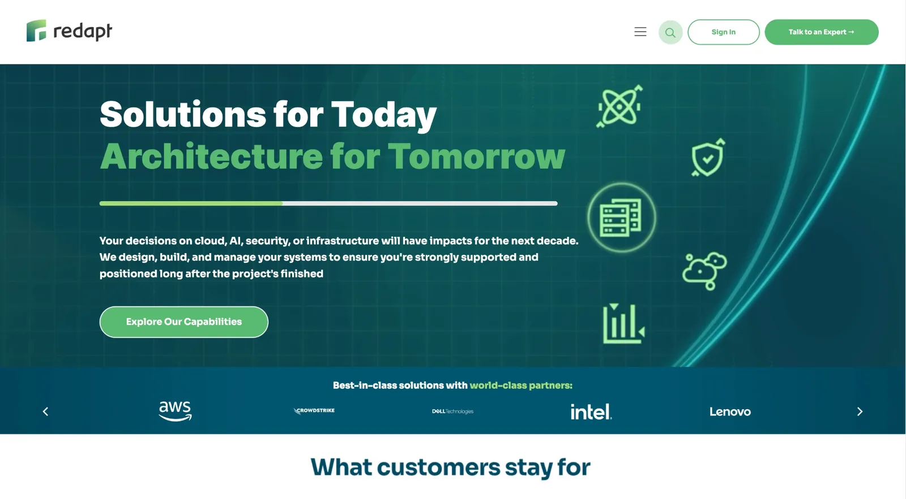

Website · Marketing · Redapt, Inc.
Redapt.com: content and redesign support
- My role
- Manage website content and support the site redesign alongside marketing leadership, building and updating pages in HubSpot Design Manager with HTML, CSS, and JavaScript.
- Also owned
- The sales enablement materials, solution content, customer stories, guides, and presentations that feed the site and the sales team.
- On the page
- A homepage that leads with Redapt's "Solutions for Today, Architecture for Tomorrow" message and a partner bar featuring AWS, CrowdStrike, Dell, Intel, and Lenovo.